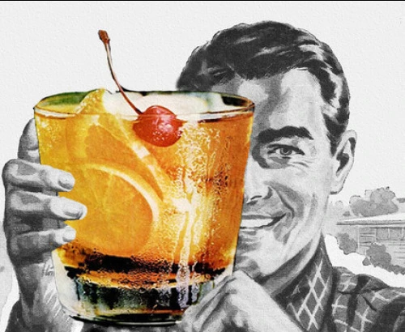

All-weather, pack-a-punch, eternal classic! Simplicity is power.
Ingredients
- 2 tsp simple syrup
- 1 tsp water
- 2 dashes bitters
- 50 ml bourbon whiskey
- 1 orange slice
- 1 maraschino cherry
- some ice
Steps
- Pour the simple syrup, water, and bitters into a whiskey glass. Stir to combine, then place the ice cubes in the glass
- Pour bourbon over the ice, and garnish with the orange slice and maraschino cherry.
Return to main page